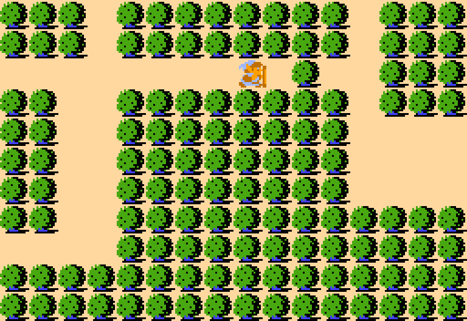
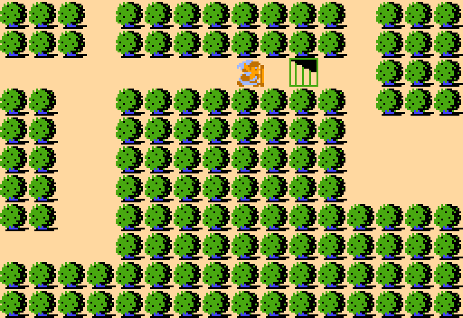
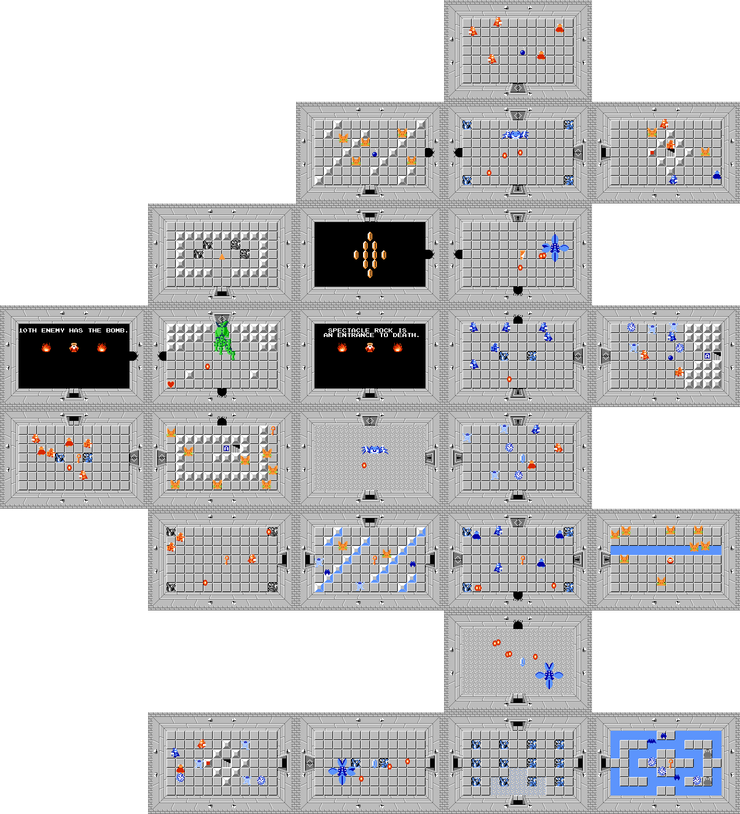
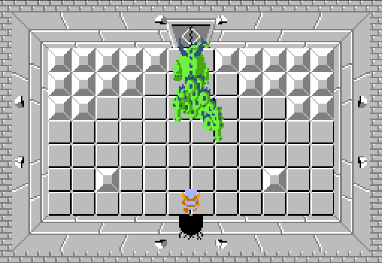

Location and How to Get There
This level is found hidden under a tree you need to burn in a forest, pretty well hidden.
{kind=link}

{kind=link}

The Layout
The level is shaped like the head of a lion.
It resembles the shape of the magical key you unlock here.
The size is slightly smaller than level 7, but it is still huge.
{kind=link}

Key Items
{kind=link}
{kind=link}
The Boss, Gleeok (4 Heads)
The same boss as level 4, except it has double the heads this time!
It can be pretty difficult, but at this point you have so many hearts and good equipment, it won't be too difficult.
{kind=link}

Difficulty
9/10 This level is pretty difficult, featuring a lot of the previous bosses just roaming around, along with Blue Darknuts.
Some of the previous levels had some of the previous bosses as well as mini bosses, but this level has the most of them.
Besides the main Gleeok boss there are 3 Manhandlas, and 2 Blue Gohmas.
My Rating
9/10. An all-around very solid level.
I like the metallic-gray color scheme mixed with the brighter water.